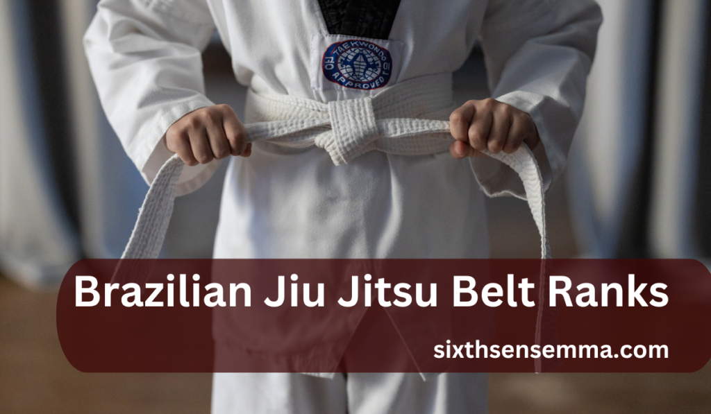
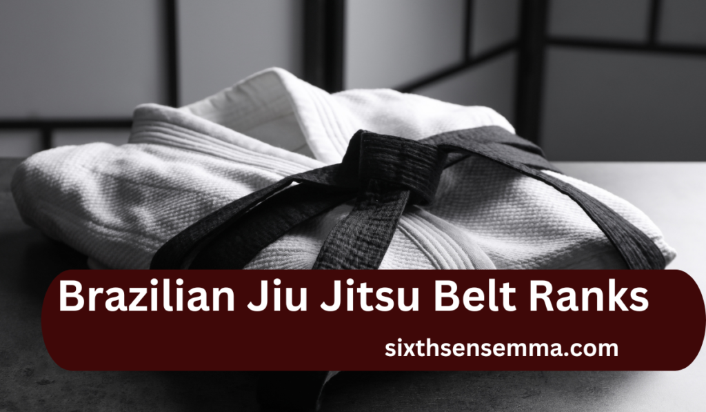
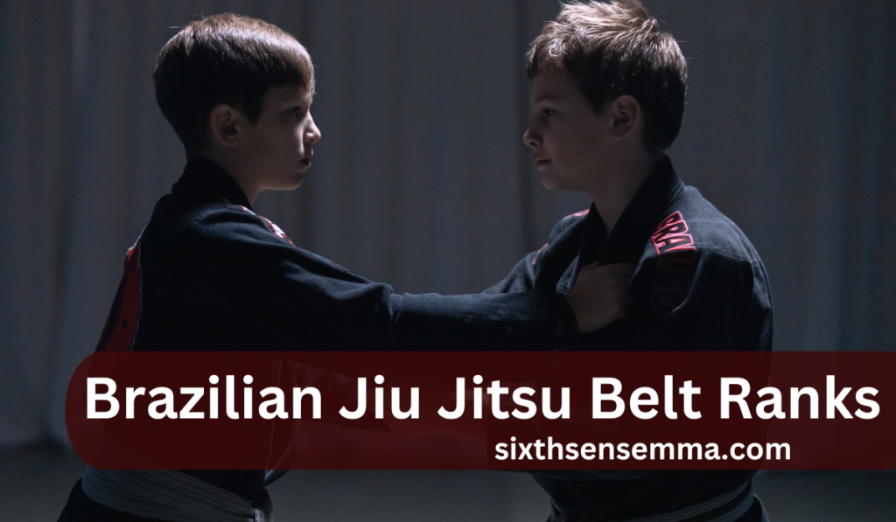

Brazilian Jiu Jitsu Belt Ranks 2025: Conquer The Path To Black Belt

While demanding and rewarding at the same time, embarking on the Brazilian Jiu Jitsu (BJJ) journey as a practitioner requires insight regarding the various Brazilian Jiu Jitsu Belt Ranks that a student must earn along the way. Most important, understanding the prerequisites to the coveted black belt, and what each rank denotes in terms of passion and devotion throughout the entirety of training.
The Essence of the Brazilian Jiu Jitsu Belt Ranks System
Brazilian Jiu Jitsu Belt Ranks has a clear defined belt ranking system that acts as a progressive chart that tracks the development of the student from a technical, physical, and psychological perspective. Each belt color represents a specific grade of skill and comprehension, which stems from years of consistent practice. The belt system does not focus on competencies only.
It rewards, as well, the commitment, endurance, and growth of the person. Moreover, it provides a framework to aspiring individuals where objectives are set and tangible progress is provided in relation to these goals properly put forth which will be of the utmost benefit to people aspiring to achieve disciplines goals all the while practicing modesty and the notion of ceaseless pursuit of knowledge.
White Belt: Laying the Foundation
Beginning with the white belt, a student is assumed to have just started their journey. In this phase, learners are taught the basic principles of this art. At the initial stages, students focus on body parts including, but not limited to, grips, base control, fundamental submissions, as well as body positioning. Defensive posture is stressed with special attention to escaping bad positions and balancing.
Mistakes here are expected, and even encouraged. The effort for this level is focused more on trial and error and figuring how to learn effectively. In short, students are expected to absorb the basic fundamentals, hone their muscle memory, and develop the necessary mental attributes that foster a readiness to learn for as long as possible.

Blue Belt: Building Competence
A blue belt denotes that a student has grasped the fundamental aspects of Jiu Jitsu. After practicing consistently for a duration of one to two years, blue belt holders begin to demonstrate school with reasonable confidence.
With this level comes gaining the capability to implement techniques under duress. This phase is characterized by an increase in the amount of tools which one possesses ranging from transitions and sweeps to guard variations. The ability to perform attacks and defend against them is less lopsided and practitioners begin to notice which techniques work best for them in relation their physique and tactics.
The journey of earning a blue belt often includes competing in live events which helps practitioners improve their skills and adapt to changes quickly.
Purple Belt: Proficiency
A purple belt signifies a shift from being a learner to a technician, marking the end of the first phase of training. A belt earned after four to six years of advancement, the practitioners who receive this belt have a to showcase a well rounded understanding of the art.
The purple belt exemplifies the martial artist who can blend movement, technique, and timing in a coherent sequence. By this level, one has mastered the fundamentals of strategic thinking, react-tion based movements, and combination attacks. These practitioners often begin teaching lower belts, which helps them understand concepts better.
It is around this stage that a practitioner has developed his style, which makes training become more focused and objective.
Brown Belt: Mastery
This is the last step before attaining a black belt. The stage is marked by refinement and increased control, thus the earned belt is a brown one. Practitioners now have a very strong understanding of both theoretical concepts alongside real-life application and are able to intertwine both smoothly.
Movements become economical with well choreographed transitions, making efficiency, timing, and strategy to become very prominent.
Competitors seeking to advance at grips and breathing do what Elite Brown Belts do take their game to the next level. This stage of proficiency involves more sophisticated understanding of concepts like pressure passing, counters to counters, or positional dominance.
This level of brown belts is usually in charge of drills and classes and as a result, becomes a role model exhibiting the values of discipline and humility whenever they are not coaching.
Black Belt: The Apex of a Brazilian Jiu Jitsu Belt Ranks Career
His her black belt in Brazilian Jiu Jitsu Belt Ranks therefore functions not only as a rank but also as a braiding of many endeavors that hones passion and intense will power together with exceptional BJJ skills. This is granted after one has accurately dedicated ten or more years exposing themselves to a floor based system teeming with principles that require astute skill, logic and prioritised actions to perfect.
Black belts are often mentors, through their journey they possess plenty of knowledge and wisdom to share with other people. Their game often reflects great technical depth and fluidity built over years of executing techniques in perfect unity with purposeful movement.
During this period, the focus shifts primarily to community service ensuring that the customs of the art are modified and advanced while being honored and regulated.

After Black Belt: Progress with Degreed or the Honorary Red Belt
Receiving a black belt does not signify that progress has been halted, as practitioners can continue to earn degrees known as “dans.” These degrees correspond to their efforts regarding study and mentorship, and they require formal recognition of the practitioner’s continuing dedication.
These awards are given with the passage of time and acknowledgment of training, their contribution to the evolution of Brazilian Jiu Jitsu Belt Ranks, and the impact they have made on their students or the society. The red belt lies at the top in the hierarchy – a distinction which is very few in number and is meant for people who have given the major chunk of their life to Brazilian Jiu Jitsu Belt Ranks.
This rank is granted after decades of molding an influence and legacy, and embodies wisdom, respect and great achievement in the discipline.
ALSO RED THIS BLOG : What Martial Art Destroys Boxers? Comparing Fighting Techniques for Ultimate Dominance
The Role of Stripes in Progression
Stripes are implemented on a student as a means of distinguishing different degrees of achievement that an individual has earned with respect to their attendance, behavior and performance during training. With each new stripe earned, the amount dedicated to each belt remains the same while motivation increases and inspires further advancement.
Stripes offer students motivation, structure, and better yet, recognizes their efforts. Full belt promotions are based on performance, understanding from training, and attitude, which is another way to keep students engaged and focused.
Children’s Belt System: Nurturing Young Practitioners
Young athletes can incorporate other stages of development with Brazilian Jiu Jitsu Belt Ranks with this distinct belt system. Remedial processes can be defined cognitively as the breakdown of a task into smaller components using the colors of grey, yellow, orange, and green, which allows for motivation and purpose.
This approach integrates their mental as well as their physical development so that the children are always motivated and stimulated. The approach also incorporates the development of essential skills like orientation, concentration, and respect as the primary focus for these promotional advances.

Promotion Influencing Factors
The same social AND promotional criteria applies when a student advances in rank of Brazilian Jiu-Jitsu after acquiring the necessary technical skills. The same social and promotional criteria apply where instructors take into account other factors such as frequency of attendance, understanding of the lesson, and overall attitude towards fighting.
Teammates’ support for members who show strong work ethic during classes is considered as well as the expected work ethic shown during challenging scenarios.
So is the amount of time spent on the practice mats and the time dedicated to self-reflection after class. All these factors ensure that with hard earned promotions come great responsibility.
Understanding Time and Experience Together
While capturing all the necessary techniques is important, the amount of hours spent by a student is equally important. Time spent rolling, drilling, talking through seminars, and teaching are all how a student acquires time, understanding, and mat intelligence.
Working under stress leads to habitual behavior and varying training partners over time contributes to flexibility. A combination of both lived experiences and retrospective known information outlines real progress in an art.
The Mental Journey: Cultivating Resilience
The art of Brazilian Jiu Jitsu Belt Ranks is equally demanding on the mind as it is on the body. It requires relentless patience and emotional control. Learners adopt a broad range of competencies such as staying calm while being placed in distressful positions, experiencing setbacks with dignity, and viewing failure as an opportunity to learn.
Through facing difficulty, students grow in self-awareness, humility, and self-discipline, traits which are not only useful in the dojo. In correlation with their adaptive fighting techniques, these mental changes are as important to progress in a skill level as any other theoretical understanding.
Common Challenges and How to Overcome Them
Stagnation, injury or frustration is a reality every practitioner must face at least once. Those breakdowns may sometimes occur due to a plateau. The feeling is demotivating, although well-defined goals, tracking your individual progress, and redirecting attention towards another aspect of the game helps restore motivation.
More seasoned practitioners and assistants often alter the perception with fresh ideas. Consistent activity combined with a proper distribution of effort and rest guarantees an equal approach to steady improvement. By perceiving problems as learning experiences, students able to deal with challenges while remaining productive.
The Significance of Community and Mentorship
Such bonds in Brazilian Jiu Jitsu lead deeper than mere physiological growth. Having a tribe made up of class mates, coaches, and a wider network offers increased motivation, can help emotionally, and provides different ways to learn. Assistance from experienced practitioners can help discover dormant potential, fix poor behaviors, and help with encouragement during failures. Shared bonds through direct experience makes the training journey pleasant and worthwhile.
Striking a Balance Between Competition and Self-Development
Focusing on attaining medals or testing skill repeatedly can make someone progress faster but focusing on internal growth is equally essential. Competing is one way to benchmark how effective one is, but self mastery and mental self discipline is what the journey truly revolves around. Practicing mindfulness and enjoying class flow while winning tiny bits everyday are kinds of fulfillment that doesn’t come from winning trophies.
An Overview of the History of The BJJ Belt System
The ranking system model of Brazilian Jiu Jitsu has its origins in Japanese Judo. With time, its primary structure evolved as its own system with defined grades which describe much more than the skill level of the individual. The colored ranking system is a marked advancement for instructors to easily track the progress of their students and ensured that learners stay motivated. In studying this, it is clear that the system values not only information but also effort made in acquiring it.
Promotion in Brazilian Jiu Jitsu Belt Ranks Brazillian Arts Globally
There are different continents and within each there are different countries and the criteria for advancement differ overall.Certain areas stress attendance and techical skill proficiency, while others reward competition results and long-term consistency. Differences within the bounds demonstrate the diversity of local culture and the philosophy of institutions. In all circumstances, progression always represents a combination of devotion, time, and personal maturation traits.
Personalize The Goals You Set For Yourself in Relation to The Belt System
Each student’s journey is unique. milestones like learning new guards, enhancing endurance, or even teaching can be as fulfilling as moving up the rank. When objectives resonate with personal values instead of the mere chase of belts, there is boosted motivation and deepened satisfaction. Well-thought out goals bring a clearer sense of progress and makes the achievement more delightful.
The Journey of Life For A Brazilian Jiu Jitsu Belt Ranks Practitioner
Life is full of mysteries and training is no different—unexpected, full of lessons to learn, and sometimes humiliating. Some sessions give you flow, while others are irritating, but they all teach you something. With difficulties comes wisdom in how to be patient, how to be adaptable, how to be confident, and so on. In many ways, what transforms the mat into a place for inflection, personal evolution, and metamorphosis is growth outside the academy.
The Celebration of Accomplishments and Progress Towards The Set Goals
Turning in achievements—new level or a nod from a coach—serves as motivation to grind harder since it validates hard work. All these factors boost motivation and exemplify how far one has come. Appreciating milestones help build confidence and deepens and binds one to the art. What counts is not the finishing point but loving every moment of each win.
Conclusion
The numbered progression within the BJJ setting serves as a more refined measurement of an individual’s unique and fighting skill, dedication and loyalty in Brazilian Jiu Jitsu speaks volumes. Earning each belt is a new chapter in the journey of self-discovery and personal development.
As you move closer to earning a black belt, always recall that every journey is not only about the end goal, but also the experiences that help you grow. Learn from the challenges you encounter along the way, value the progress you make, and strive to be a better version of yourself on the mat, and off it.
FAQ’s
For adults, the order of BJJ (Brazilian Jiu-Jitsu) belts is typically: White Belt Blue Belt Purple Belt Brown Belt Black Belt Red and Black Belt (Coral Belt) – 7th Degree Black Red and White Belt – 8th Degree Black Red Belt – 9th and 10th Degrees (very uncommon, typically only held by the founders) Kids have their own ranking system which feature the following belts: -grey -yellow -orange -green ( these are prior to them joining the adult belt system)
Conor McGregor has a BJJ brown belt under Coach John Kavanagh.
He is a blue belt in Brazilian Jiu-Jitsu. He has trained under Dave Camarillo and competed in some tournaments.
After a consistent training regime for 5 years, the average BJJ practitioner is at a purple belt level. Though, progression is dependent on a person’s commitment, skill level, and the standards of the gym.
Currently, Elon Musk has not been officially ranked in Brazilian Jiu-Jitsu. While he has shown some interest as well as completed some training, a suitable belt rank has yet to be assigned to him.
Jackie Chan is not credited with a BJJ belt. He is known for traditional Chinese martial arts, stunt work, Hapkido which he holds a black belt in, as well as several forms of Kung Fu.
Keanu Reeves has practiced martial arts for his film roles (like with John Wick) including BJJ. Nevertheless, there is no record of him being issued a rank or belt of any sort for BJJ.
Joe Rogan holds a black belt in Brazilian Jiu Jitsu from both Jean Jacques Machado and Eddie Bravo (10th Planet Jiu Jitsu).
Henry Cavill is known to practice BJJ as part of his fitness and preparation for acting. At the moment, he is said to be a white belt which indicates that he is a beginner.
Train with us in Coppell
The first class is free. Shorts, a t-shirt and a water bottle. We lend the rest.
Book a free class